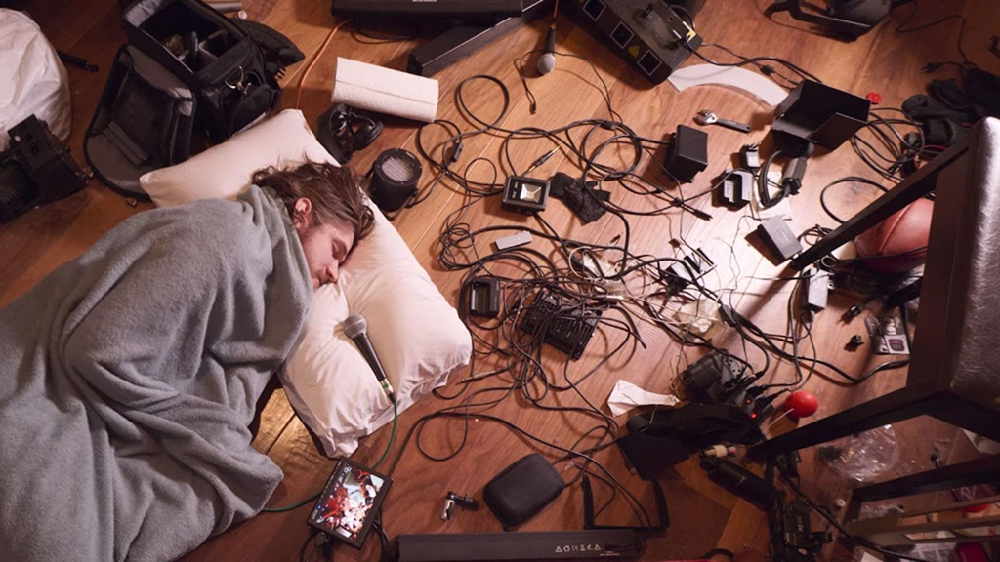

You are MISSING OUT!!
Seriously. Go watch it! If you're reading this, you might be interested in Bo Burnham, and you're missing his best work yet. Or you're interested in post-modern forms of communication, in which case, you're missing out on a prime example of post-modern work. Maybe you're reading this because you're obligated to in some way-- Inside will give you a good laugh, and you deserve a break!
In any case, I strongly encourage you to watch Inside!

Burnham lays on the ground, surrounded with recording equipment, commenting upon how allowing media corporations to exploit children and flattening the human experience into marketable value is bad.
But I get it.
You're busy.
You don't have Netflix.
You're just here because you have to be.
Whatever the reason.
If you don't have time, here's a summary of Inside:
You're busy.
You don't have Netflix.
You're just here because you have to be.
Whatever the reason.
If you don't have time, here's a summary of Inside:
Comedian Bo Burnham wrote, sang, directed, starred in, produced, and edited a post-modern piece of cinematic mastery that takes place solely in (or in front of) his guest house. It's a collection of music videos, interspersed with "B Roll" footage of his creating the special (that also showing his deteriorating mental health) and "snippets" that aren't songs but rather parodies of common kinds of other videos (like directly thanking the audience for watching, commercials, interviews, live gaming feeds). Emerging during peak COVID-19 pandemic, Burnham satirically commentates upon serious systemic issues, like racism, classism, labor exploitation, destructive technological practices, societal norms that are questionable at best, among others--the very things that shouldn't be joked about (something he himself questions at the very beginning). This "comedy special" highlights themes of mental health, performativity, and the crumbling of society as we knew it.
If you want to see a wonderful compilation from the special, watch this unofficial, fan-made trailer that honestly does a fantastic job of capturing the tone and character of the film.
If you want to see a wonderful compilation from the special, watch this unofficial, fan-made trailer that honestly does a fantastic job of capturing the tone and character of the film.
Okay, okay. Now that you're kind of caught up, go join the angsty people who already watched and worshiped Inside, the 2021 time capsule that it is. Representative of it's time. Timeless for the rest of us.
Rhetorically Designing Lyrics from
Bo Burnham: Inside
Bo Burnham: Inside
by Amber Hunsaker
Context
On May 30th, 2021, Bo Burnham released Bo Burnham: Inside on Netflix. This “comedy special” parodies American life during COVID-19, while also highlighting deeply entrenched systemic issues of capitalism, struggles with mental health, existential crises, and expectations of performativity. Burnham’s lyrics and script are simultaneously hilarious, dark, hopeful, pessimistic, personal, universal, and profound.
Because of the multifaceted and nuanced layers, Burnham’s work should be experienced through multimodal forms of communication. Lauer (2009) summates that “[m]ultimodal texts are characterized by the mixed logics brought together through the combination of modes” and that “the screen is becoming the primary site where multiple modes can be composed to make meaning in dynamic ways” (227). But it’s not enough to simply participate in reading these modes, I also wanted to create them.
Presented in this collection is my effort to visually express communication regarding how I experienced the lyrics of Inside.
Because of the multifaceted and nuanced layers, Burnham’s work should be experienced through multimodal forms of communication. Lauer (2009) summates that “[m]ultimodal texts are characterized by the mixed logics brought together through the combination of modes” and that “the screen is becoming the primary site where multiple modes can be composed to make meaning in dynamic ways” (227). But it’s not enough to simply participate in reading these modes, I also wanted to create them.
Presented in this collection is my effort to visually express communication regarding how I experienced the lyrics of Inside.

What follows are four original Bo Burnham songs from his comedy special, Bo Burnham: Inside and one song from his “Outtakes” version of Inside. I have designed the lyrics in such a way to convey the underscoring themes and feelings found within Inside.

Gif of Burnham during his song “White Woman’s Instagram”
How to experience the Lyrics
The lyrics here are presented in set list order of Inside.
Each page containing lyrics will begin with a video of the song that is being transcribed. Some videos are actual music videos from Inside while other videos are audio only videos.
I recommend playing the video/audio and following along with the lyrics. After each set of lyrics, there is a "Recreator's Note" where viewers can opt to read an analysis/justification of decisions and inspiration. A comprehensive reflection of this project can be found on a separate page.
If you have blue/red 3-D glasses handy, now is the time to find and use them when prompted.
Each page containing lyrics will begin with a video of the song that is being transcribed. Some videos are actual music videos from Inside while other videos are audio only videos.
I recommend playing the video/audio and following along with the lyrics. After each set of lyrics, there is a "Recreator's Note" where viewers can opt to read an analysis/justification of decisions and inspiration. A comprehensive reflection of this project can be found on a separate page.
If you have blue/red 3-D glasses handy, now is the time to find and use them when prompted.
Lyric Pages
Criticizing labor exploitation, while self-degrading his need to be liked and appreciated, Burnham's lyrics/performance create a cacophony of noise that contributes to listeners' experience of living in a world where voices are constantly bombarding online platforms, all striving to be heard and stand out. My work shows a literal voice-to-visual representation that exemplifies the chaos Burnham delivers.
Early in Burnham's documented mental health crisis, "All Time Low" attempts to ironically describe what it's like experiencing a panic/anxiety attack. Recreated lyrics uses metaphoric imagery to capture “that funny feeling” of impending doom.
One of Burnham's most popular songs, "Welcome to the Internet" is catchy and dark, wrapped into a stellar banger. My transcribed lyrics are a meta-representation of the song because they use the media/lyrical subject itself as a form of communication.
While simple in lyrics, the song is laced with a condescending irony and tongue-in-cheek rhetoric, built up throughout the entire special. The visual lyrics lean into the ironic tones, depicting seemingly celebratory lyrics with campy visuals, some grounded in internet meme-lore.
Arguably the most important song in all of Inside, including "Inside: The Outtakes" because of its non-satirical plea that viewers connect with Burnham. Visually represented lyrics incorporate all the aforementioned styles of visualization: literal, metaphorical, meta-representative, and tonal.

Gif of Burnham’s lyrics from “Content”
After the lyric pages, you can find the following pages:
I offer justification for exploring Burnham’s work through a multimodal lens.
This project did not solely take place on the inter-webs; it materialized into the real world.
While reflection can be found throughout the “Recreator’s Notes” found underneath the designed lyrics, this page shares my reflection of completing the project as a whole, or of elements found throughout the project (not specific to one set of lyrics).
Surprise, I cited all my sources throughout the site.
As you might imagine, I thank key people who helped made this project happen.